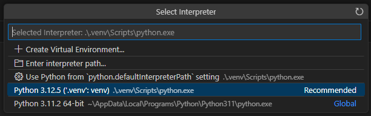
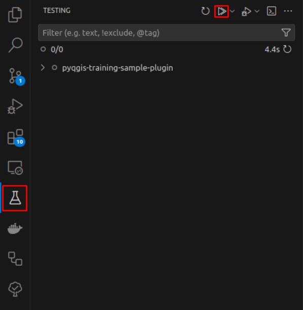

Exercise 5: Creating a plugin
Contents: Creating a plugin by using Cookiecutter
Goal: To know how to use Cookiecutter to create a base for your own plugin.
The base is created using commandline tools. Let’s use the OSGeo4W Shell as a commandline. This should be included in the QGIS installation. You can open it from the search bar by writing OSGeo4W.

Configuring Git
Before creating the plugin we need to configure Git to work correctly.
- Add the path to the Git executable to the PATH environment variable:
set Path=%Path%;"C:\Program Files\Git\cmd"- Configure your username and email
git config --global user.name your_user_namegit config --global user.email your_email- Make Git also update any submodule when doing a
git pull. This affects qgis_plugin_tools which you need.
git config --global submodule.recurse true- Force git to use Unix-compatible end of line symbols
git config --global core.autocrlf inputCreating the plugin
First create a folder for the plugin in a suitable location and navigate to this folder in OSGeo4W Shell:

- Create a virtual environment for the plugin
%PYTHONHOME%/python.exe -m venv cookiecutter-venvIn the OSGeo4W shell the %PYTHONHOME% environment variable refers to the Python interpreter included in the QGIS installation.
- Activate the virtual environment
.\cookiecutter-venv\Scripts\activate- Install the
cookiecutterandpip-toolsPython packages to the new environment
python -m pip install -U pip
pip install cookiecutter pip-tools- Create a new template:
cookiecutter https://github.com/GispoCoding/cookiecutter-qgis-plugin.git- You can use the default settings except for:
Select a name for your plugin: Test PluginInclude processing algorithm in your plugin?: y
- Deactivate the cookiecutter virtual environment and navigate the plugin folder:
deactivate
cd test-plugin- The folder already contains a Python script which creates a new virtual environment suitable for plugin development. Run the script.
python create_qgis_venv.pyIf your computer has many QGIS installations the script might ask which one of them to use. Preferably choose the latest LTR version.
- Activate the new virtual environment
.venv\Scripts\activate- Install pip:
python -m pip install -U pip- Install pip-tools:
pip install pip-tools- Use the pip-compile tool to compile a list of the needed Python packages to a text file:
pip-compile requirements-dev.in- The list was created to the
requirements-dev.txtfile. Install the packages:
pip install -r requirements-dev.txtAfter running the command it’s good to confirm that the installation was successful. You can use the
pip freezecommand and you should see for examplepytestandpytest-qgisin the listed packages.After this you can open Visual Studio Code. Open the
test-plugin.code-workspacefile which should open in VS Code by default.Make VS Code use the correct
.venvwhich was just created. Select from the Help menu Show All Commands and type to searchPython: Select Interpreter.

- When you close and reopen VS Code the development environment should be
fully set up. You can confirm this by opening the
plugin.pyfile inside thetestpluginfolder. The import commands on the top of the file should not have any error messages.

- The project includes one test by default which you can check by opening the panel from the left and running the tests.

Adding the plugin to QGIS
As a next step add the plugin to QGIS.
- Open QGIS and create a new profile called
training - Edit the
testplugin/build.pyfile and changeprofile = "training" - Navigate into the
testpluginfolder and deploy the plugin by using thebuild.pyscript.
cd testplugin
python build.py deploy- Reopen QGIS and check that you’re using the training profile.
- Open the Plugin menu and from the left click Installed Test Plugin
- From the All tab search for Plugin Reloader and install it. You need it later on to reload the plugin as you’re developing it.
- Test that the plugin works correctly. Open the QGIS Python Console and then run the plugin from the top menu Plugins -> TestPlugin -> Test Plugin. Some text should be printed out to the console.
Structure of the plugin
Here’s a simplified overview of the plugin folder structure.
📦test-plugin
┣ 📂.git
┣ 📂testplugin
┃ ┣ 📂qgis_plugin_tools
┃ ┣ 📂resources
┃ ┣ 📜metadata.txt
┃ ┣ 📜plugin.py
┃ ┗ 📜__init__.py
┣ 📂tests
┃ ┣ 📜test_plugin.py
┣ 📜.gitignore
┣ 📜LICENSE
┣ 📜README.md
┣ 📜requirements-dev.txt
┗ 📜pyproject.tomlFile: plugin.py
Inspect the testplugin/plugin.py file. It should contain a class definition
of Plugin and it should have at least the following methods:
__init__: constructor of the class which is called from thetestplugin/__init__.pyfileinitGui: adds the plugin to the QGIS GUIunload: removes the plugin from the QGIS GUIrun: code that runs when the plugin is activated
The run method can be renamed, but the other method names need to be the same,
since QGIS calls them internally.
File: __init__.py
This file includes an important method called classFactor. QGIS
initializes the plugin by calling this method. It returns Plugin
class which was mentioned above to QGIS:
def classFactory(iface: QgisInterface):
from testplugin.plugin import Plugin
return Plugin()